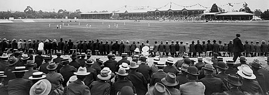

Analyzing the Evolution of English Cricket: From Traditional Formats to Modern Innovations
September 13, 2024
Cricket, with its origins deeply rooted in the pastoral landscapes of 17th-century England, has undergone a remarkable transformation over the centuries. From its early days as a leisurely pastime for country gentlemen to its present status as a global sport with sophisticated formats and technology, the evolution of English cricket is a testament to its enduring appeal and adaptability. In this blog post, we’ll explore how English cricket has evolved from its traditional formats to embrace modern innovations, reshaping the sport in profound ways. The Traditional Formats: A Historical Perspective To understand the evolution of English cricket, it’s essential to appreciate its traditional formats. The game began with Test cricket, which remains the sport's oldest and most revered format. Test cricket, inaugurated in 1877 with the first-ever Test match between England and Australia, represents the epitome of cricket's traditional values. Matches are played over five days, and the format demands a combination of endurance, skill, and strategy. The five-day Test format allowed for in-depth analysis of players' techniques and team strategies, cementing its place as the pinnacle of cricketing excellence. Following closely behind Test cricket is First-Class cricket, which became prominent in the 19th century. Played over three to four days, it provided a platform for domestic players to showcase their skills and serve as a feeder system for international cricket. The County Championship, introduced in 1890, became a cornerstone of English domestic cricket, highlighting local talent and fostering competitive play. One-Day Internationals (ODIs) emerged in the 1970s as a revolutionary format that condensed the traditional game into a single day’s play. The inaugural ODI, held in 1971, brought a new rhythm to cricket, characterized by its faster pace and more aggressive style. This format attracted a broader audience and injected a sense of excitement and immediacy into the sport. The Advent of Twenty20 Cricket: A Game Changer The real game-changer, however, was the introduction of Twenty20 (T20) cricket. First played in 2003, T20 cricket redefined the sport with its even shorter format, featuring 20 overs per side. The format’s emphasis on explosive batting, aggressive bowling, and rapid scoring has made it immensely popular among fans and has significantly altered how the game is played and perceived. The English T20 competition, known as the T20 Blast, was launched in 2003, quickly becoming a fan favorite. The success of T20 cricket has led to the creation of franchise-based leagues like the Indian Premier League (IPL), which has further globalized the sport and introduced new dimensions of commercialism and entertainment. Modern Innovations: Technology and Analytics In recent years, technological advancements have brought a new level of sophistication to cricket. Hawk-Eye technology, which tracks the trajectory of the ball, and Decision Review System (DRS), which uses technology to assist umpiring decisions, have enhanced the accuracy and fairness of the game. These innovations have not only improved the spectator experience but have also had a significant impact on player performance and team strategies. Data analytics has also become a critical component of modern cricket. Teams now employ analysts to study opponents, track player performance, and devise game plans based on detailed statistical insights. This analytical approach has revolutionized team management and game strategy, allowing teams to make more informed decisions and refine their tactics. Player fitness and conditioning have also seen dramatic improvements. Advances in sports science and technology have led to more personalized training regimens, injury prevention techniques, and recovery protocols. Players today are not only more skilled but also in peak physical condition, contributing to the high-paced nature of modern cricket. The Future of English Cricket As we look to the future, the evolution of English cricket continues to be driven by innovation and adaptability. The rise of The Hundred, a new format introduced in 2021 with 100 balls per side, represents the latest experiment in the quest to make cricket more engaging and accessible. This format aims to attract a new generation of fans by delivering a condensed, high-energy version of the game. Moreover, the increasing emphasis on sustainability and inclusivity reflects a broader societal shift. English cricket is actively working to promote environmental responsibility and diversity, ensuring the sport remains relevant and appealing to a diverse global audience. Conclusion The journey of English cricket from its traditional formats to modern innovations showcases the sport’s ability to evolve while staying true to its core values. The blend of history and modernity not only enriches the game but also ensures its continued relevance and appeal in an ever-changing world. As we celebrate the rich heritage of English cricket, we also embrace its future, poised for new innovations and exciting developments that will shape the game for generations to come.